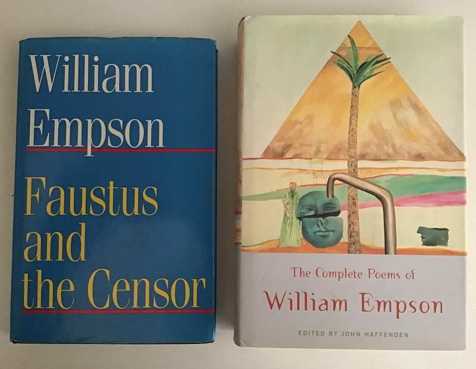

Criticism, fiction and other writing
This is a revised version of an essay I wrote in 1996. I’ve enjoyed reacquainting myself with its arguments, most of which I’d forgotten in the meantime.
Photo: Art Kavanagh
A particular type of myth plays an important part in some of the early poetry of William Empson: that up to and including ‘Bacchus’. It is the same kind of myth as Leda’s — who, with her daughter Helen, is a prominent figure in the poems of Yeats — a myth concerned with the engendering of offspring one of whose parents is a god, the other human. The issue of this kind of union is usually a demigod, but Empson concentrates on the two extreme cases: the union of Jupiter and Semele, which produced Bacchus, and the attempted union of Ixion with Juno, which resulted in the centaurs. Bacchus is always described as a god, not a demigod; and the centaurs have nothing divine in them, since Ixion mated, not with Juno, but with a shape substituted by Jupiter. The reason for Empson’s preoccupation with this type of myth is not hard to discern. In the notes to ‘Bacchus’, he says
The notion is that life involves maintaining oneself between contradictions that can’t be solved by analysis; e.g. those of philosophy, which apply to all creatures, and the religious one about man being both animal and divine. (Complete Poems, 290)
In each case (except Ixion’s, since he did not actually succeed in mating with the goddess), a being is begotten who combines an immortal part with a mortal. This ought to be impossible, since any being must be wholly one thing or the other — the slightest touch of mortality is fatal. It is the apparent futility of trying to bring into existence such hybrid creatures that provides the main theme of the first two stanzas of ‘Invitation to Juno’:
Lucretius could not credit centaurs;
Such bicycle he deemed asynchronous.
‘Man superannuates the horse;
Horse pulses will not gear with ours.’
Johnson could see no bicycle would go;
‘You bear yourself and the machine as well.’
Gennets for germans sprang not from Othello,
Ixion rides upon a single wheel. Complete Poems, p. 12, ll. 1–8
The ‘bicycle’ in the first stanza refers to the two different life-cycles (Empson in his note says ‘life-periods’: Complete Poems, 159) that the demigod would have to inherit. Actually, if the two different cycles are represented by graphs, as wave patterns, it is easy to imagine that they can be added together, to produce a wave with a different period and amplitude, that is to say, a different life-cycle. This suggests that the centaurs, who seemed so implausible to Lucretius, are easier to credit than a genuine demigod would be. A true immortal, of course, would not have a life-cycle at all; the graph would show just a straight line stretching off to infinity. To add another, mortal, life-cycle to it would introduce a slight curve into the line, indicating that the issue would be a being who might be extremely long-lived, but would not be immortal in the strict sense.
Empson now makes of ‘bicycle’ something very like a metaphysical conceit. Having used the term to convey the inherent duality (or even contradiction) in any attempt to combine a god’s ‘life period’ with a human’s, he goes on to elaborate the word’s implications. He likens Lucretius’s objection to the metaphorical bicycle to Dr Johnson’s belief that an actual bicycle would be an absurdity:
‘Then, Sir, (said Johnson) what is gained is, the man has his choice whether he will move himself alone, or himself and the machine too’. (Gardner 1978, 45; quoting Boswell, Life of Johnson)
The point of this is that Johnson’s argument — laughable as it seems to us, who can see that a bicycle will go — is rational, though ignorant, being based on incomplete information. More energy is needed to move bicycle and rider a given distance than to move the rider alone. Since the energy which is used to propel them is the rider’s own, the bicycle would appear to be a particularly pointless invention. What Johnson has overlooked is that, because the bicycle runs on wheels, it allows the rider’s energy to be used much more efficiently than it would be in walking, so that the saving more than compensates for the extra energy that is needed. Since Johnson’s rational scepticism is being compared to Lucretius’s, it is implied that the objection to the possibility of marrying the mortal to the immortal, though it appears unanswerable, might be based on an imperfect understanding of the problem, and particularly on a misunderstanding of the true nature of immortality — if such a thing exists.
Continuing his ‘bicycle’ conceit, Empson recalls Iago’s successful attempt to induce in Brabantio a correspondence to his own jealous revulsion at the marriage of Othello and Desdemona. Iago implies that Brabantio’s relatives (‘germans’ — in fact his grandchildren) will be of mixed species, not just biracial. In the event, no children are born to Desdemona, so that the “gennets” remain merely creatures of Iago’s luridly vicious imagination. The real significance, of course, of the reference to Brabantio’s inconceivable grandchildren, is to make it clear to us just who are these strange hybrids, these demigods or centaurs, whose possible existence is being debated. They are, clearly, human children, each of whom is thought of as being made up of a body which is all too evidently mortal and a soul which is supposed to have an everlasting life.
The recognition of this fact gives further point to the reference to Johnson’s conception of the bicycle. It is possible to see the bicycle as representing the body and the rider as the soul. The body is, apparently, cumbersome and mechanical, just so much dead weight that has to be carried around, a drain on the energy of the really important element in the duo. But the appearance is misleading. The body has its hidden utility — it can confer mobility on the soul. Mobility, I would suggest, is being made to stand for a whole range of other qualities: a soul without a body (assuming that such a thing could exist) would have no senses and no means of communicating. It would, in fact, be completely cut off. Johnson is being made the representative of a whole tradition which undervalues the body.
The Gardners, relying in part on stanzas which Empson cut from the poem, are in no doubt as to
what kind of poem it is — not a speculation on the possibilities of modern science as such (though Empson is interested in these), but a neo-metaphysical seduction poem. The goddess Juno, humbly and obliquely requested to try again the conclusions of a divine/human mating is also a human girl who may perhaps be perplexed into bed by the wit and learning of her suitor. (Gardner 1978, 44–5)
If it is a seduction poem it is one that clearly contemplates the conception of a child as a likely outcome. Christopher Ricks has suggested that the dominant theme of Empson’s poetry dating from this period is the question ‘Shall I turn a sire, boys?’ (Complete Poems, 81) — whether or not one ought to beget children (Ricks 1984). It seems to me that three lines of thought (of different degrees of urgency or immediacy) are combined in the poem. The poet is, perhaps most immediately, concerned with seduction. At the same time, he is debating with himself the practical issue as to whether he is prepared to become a parent. More fundamentally, though, he is contemplating the nature of the human being — an entity which, if it can exist at all, apparently needs to do so by maintaining itself between contradictions; one which synthesizes the antithetical elements of mortality and immortality. The final stanza appears to be a kind of resolution but is in fact an evasion. An evasion, that is, on the part of the speaker of the poem (or the poet in his adopted persona) rather than on the part of Empson himself:
Courage. Weren’t strips of heart culture seen
Of late mating two periodicities?
Did not once the adroit Darwin
Graft annual upon perennial trees? Complete Poems, p. 12, ll. 9–12
This is a sufficient answer to Lucretius but, as we have seen, Lucretius’s statement of the problem is an imprecise formulation of the one that is troubling the poet. The difficulty is not to graft the annual upon the perennial, or to get horse pulses to gear with human ones. These may all have different cycles, or life spans, but they are all mortal. What the poet needs to discover is whether it is possible to unite that which can never die with that which must.
The same kinds of ideas occur in Empson’s long and complex poem, ‘Bacchus’. The poem is, I should think, quite impossible to paraphrase, partly because of what the Gardners call ‘its dense, punning texture and the cross-referenced structure’ (Gardner 1978, 152). The myth behind the poem is the birth of the god Bacchus (Dionysus), whose mother, Semele, wanted to see her lover Jupiter (Zeus) in his divine form. He appeared to her as thunder and lightning and she was burned up. Bacchus was rescued and sown up in Jupiter’s thigh, from where he was born eventually. Bacchus is a god associated with irrationality and ecstatic ritual (as in The Bacchae of Euripides) but also with wine (and, by extension, with alcoholic drink generally). According to Empson’s notes to the poem:
A mythological chemical operation to distil drink is going on for the first four verses.(Complete Poems, 290)
He goes on to tell us that man is the ‘vessel which receives what the retort sends over’ (Complete Poems, 290), that is, ‘spirit’ (line 8). The vessel is a ‘Round goblet, but for star- or whirled- map fitter?’ (line 6). ‘Whirled’ is a pun; it means ‘world’, and the world is going around, not just because of the drink. The goblet is round because a flat-bottomed one would crack under the heat:
(The roundest ones crack least under this task;
It is the delicate glass stands heat, better than stone.
This is the vessel could have stood alone
Were it not fitted both to earth and sky). Complete Poems, p. 64, ll. 10–13
‘Fitted’, coming after ‘fitter’ in line 6, means suitable or appropriate to (the latter in turn carrying a suggestion of ‘owned by’) but the use of the comparative in the earlier line makes it clear that there is a conflict — there will always be a question as to which it is more appropriate to. ‘Fitted’ also means attached to or, as the notes have it (Complete Poems, 290), dependent on. This has to be the primary meaning, since the sense is that man could have ‘stood alone’ were he not attached to or dependent upon earth and sky (heaven).
So far, this seems relatively straightforward. However, I have concentrated on two of the three parentheses in the first stanza. The thrust of first parenthesis seems to be somewhat different. Here, Semele is described as ‘the divided glancer’ — ‘divided’ like the flask or beaker which cracks when heated, as Semele is herself destroyed by fire, but also because looking two ways at once. According to Empson, she ‘wanted heaven as real as earth’ (Complete Poems, 290). She is not content to maintain herself between contradictions. I have suggested that Empson uses the mating of a god with a mortal to symbolize the unity of an immortal soul with a mortal body in the human individual. It follows that one would expect the human half of the mythical couple to represent the body solely. However Semele, being human, has herself an immortal part, at least according to the theory. So, it is the mother rather than the child who is divided, unable to reconcile the two contradictory elements of her being.
I have already mentioned that Empson’s note stating ‘that life involves maintaining oneself between contradictions that can’t be solved by analysis’ (emphasis added). Analysis means splitting the object to be examined into its constituent parts. In a chemical analysis, it is certain what these parts are: they are the elements from which a compound is made up. Elements are the only units into which the compound can be divided. (Though the elements themselves might be further subdivided into particles, this would not be regarded as part of the analysis.) Other kinds of analysis are different. An economist, for example, wanting to examine the effect of changes in interest rates on inflation, would be likely to divide all the spending in the economy into ‘consumer spending’ as against ‘investment’. However, if required, each of these categories could be divided further, almost to the point of treating each individual transaction as sui generis.
For other purposes, one might split the economy in a completely different way — as between manufacturing industry and services, for example. The type of analysis one chooses to make has no effect on the behaviour of the actual economy (except in so far as its results may alter the expectations of the economic actors). The analytic categories are abstractions, chosen for their real or imagined suitability to the purposes of the analyst. I would suggest that most kinds of analysis more closely resemble the economic than the chemical model, in that the ‘elements’ into which the object is split are abstract rather than concrete. It seems to me that by making Semele represent the body, while at the same time showing her to embody the contradictions that go with being human (that is, showing her to be completely human), Empson is suggesting that ‘soul’ and ‘body’ are merely analytical concepts which do not reflect a real division within the human being.
‘Bacchus’ is a poem which deliberately evades analysis. It does this, as we have seen, partly by shifting back the contradictions involved in inheriting a mortal and an immortal part from the offspring to the parent. It achieves something of the same effect by combining myths. For example, a line in the second stanza — ‘Walked on the bucking water like a bird’ recalls Empson’s poem ‘Arachne’, where man (maintaining himself between contradictions again) is compared to a spider, enabled by surface tension to imitate Christ:
Twixt devil and deep sea, man hacks his caves;
Birth, death; one, many; what is true, and seems;
Earth’s vast hot iron, cold space’s empty waves:
King spider, walks the velvet roof of streams:
Must bird and fish, must god and beast avoid:
Dance, like nine angels, on pin-point extremes Complete Poems, p. 34, ll. 1–6
The comma after ‘King spider’ makes it clear that it is man, metaphorically, who walks the velvet roof of streams. In ‘Bacchus’, it is the ‘god arkitect’, identified in the notes as ‘Noah or Neptune managing the sea’ (Complete Poems, 290) who is maintaining himself in this precarious position, poised between two opposite elements. God and man are in much the same situation, so again there seems to be a denial of the possibility that the contradictions that man needs to maintain himself between are those arising from his being both mortal and immortal. As the Gardners point out, ‘the god arkitect’ is the human Noah, controlling the Flood by riding it like a bucking bronco; the god who fled down with a standard yard’ is the human hero Prometheus, whose fennel stalk is wittily represented as containing not glowing charcoal but rum’ (Gardner 1978, 155). This deliberate confusion of the human with the divine is meant to imply, I think, that gods are the same kinds of being as humans, or even that they are humans.
The second stanza of ‘Bacchus’ seems almost to overflow with mythological imagery. In addition to Arachne, there is Narcissus, perhaps using ‘his pool as mirror for the skies’, like the young woman in ‘Camping Out’. The line, ‘Helled to earth’s centre, Ixion at the wheel’ suggests, firstly, the ‘diabolocentric’ precopernican belief (also referred to in ‘Legal Fiction’) that heaven is above the sphere of the fixed stars, and hell in the centre of the earth. This, of course, is the same Ixion who, at the end of the second stanza of ‘Invitation to Juno’, ‘rides upon a single wheel’, and so has no element of ‘bicycle’ about him. He has failed to connect with the divine and only has a single life period. However, if he is (as the notes say) ‘at the tiller-wheel of the turning earth’ (Complete Poems, 291), turning with it and possibly also steering it, there is surely an implication that his unicyclic condition is also the human one; that, for all of us, the aspiration to partake of the divine is thwarted, leaving us simply to revolve with the earth.
I think it is clear that ‘Bacchus’ attempts to contain the contradictions between which the human has to maintain him- or herself. The poem presents the person as being both human and divine, both mortal and immortal, and both a bicyclist and someone who ‘rides upon a single wheel’. There is an attempt simultaneously to keep the categories distinct and to let them blur into one another, partly in order to enact the contradictions themselves, and partly to convey the feeling of drunkenness. I think that this is the point of Empson’s note that ‘[d]rink is taken as typical of this power [that is, to maintain oneself between contradictions] because it makes you more outgoing and unselfcritical, able to do it more heartily — e.g. both more witty and more sentimental’ (Complete Poems, 290). In The Structure of Complex Words, Empson described a definition of ‘wit’ (in the sense of ‘joke’) as ‘the discovery of occult resemblances between things apparently dissimilar’ as being ‘so scarifying as to be quite unrecognisable’ (Empson 1951, 87) but here he seems to be using ‘witty’ in a similar sense. Drink may make one, temporarily, a ‘bright social talker’ (Empson 1951, 86) but it also enables one, temporarily, to hold contradictory concepts together, which is precisely what the poem itself seeks to do.
While ‘Bacchus’, completed in 1939 (Complete Poems, 289), is the last poem in which Empson dealt with the coupling of mortals and immortals or the union of the soul with the body, it is evident that these preoccupations did not disappear from his thought. It seems to me likely that at least part of Milton’s attraction for Empson the critic was the former’s secret adherence to the mortalist heresy. The orthodox Christian view is that, on the death of the body, the soul departs for heaven or hell, where it remains until it is reunited with the resurrected body on the Last Day. The mortalist heresy holds that soul and body die, go to the grave or crematorium, and are resurrected, together. The soul is not expected to spend the period between death and the Last Day in a disembodied state. (One consequence of this belief is that there is no need to explain how the soul alone can suffer bodily tortures in hell.) Another aspect of the theory is that, just as God does not newly create the body of each new human being, souls too propagate themselves. Body and soul act together in the creation of new human life. For Milton, in other words, the soul and the body might be distinct, but they were not separate, or separable:
The doctrine says that the soul dies with the body, and that both will simply be reconstituted by God on the Last Day (usually of course for eternal torture); also that ‘the human soul is not created daily by the immediate act of God, but propagated from father to son in a natural order’ (vii). One might think this already inherent in a sentence of Aquinas, that ‘the risen creature must be an animal, if it is to be a man’; but Milton would also feel that it suited the organic unity of soul and body, interconnected by a hierarchy of ‘spirits’. Recent science thus made the doctrine easier to argue for; but its chief merit for Milton was to make God less tirelessly spiteful. (Empson 1965, 201–02)
So, Milton may have believed that the majority of human beings are destined to suffer never-ending punishment, but at least he did not see us as irresolvably contradictory creatures whose two incompatible parts are forever in conflict.
Ideas similar to those explored in these poems also occur in Faustus and the Censor (Empson 1987). There, Empson argues that in Marlowe’s play, as in the English and German Faust-books, Faustus did not have a sexual relationship with a demonic impersonator of Helen of Troy but with the actual Helen who, as a demigoddess and daughter of Jupiter, could be expected still to be alive in the sixteenth century:
Helen cannot be simply ordered up (GFB, Chapter 49; EFB, Chapter 45); she must be coaxed, whereas the spirits imitating Alexander and his consort could be called up and behaved like slaves. The contrast is made very plain (Empson 1987, 115–16, 157)
In Empson’s view, Helen is a middle spirit, a being who is long-lived though mortal, who does not have a soul and will simply cease to exist when she dies. This is Empson’s account of the middle spirits:
From late in the fifteenth century till nearly halfway through the sixteenth, there was a strong intellectual movement recommending belief in Middle Spirits, neither from Heaven nor Hell; they could be called spirits of nature, or elementals, or the longaevi — they lived longer than we do, but then died completely, like the beasts. They were a very wide group, including both the pagan gods known to the learned and the fairies known to the villagers, and probably also the germs that caused plague. (Empson 1987, 99)
Central to Empson’s interpretation of Doctor Faustus is the belief that Mephastophilis is also a middle spirit, and that he and Faustus each covet what the other has — Mephastophilis wants Faustus’s immortal soul (for himself, not as agent for Satan), whereas Faustus wants to be able to die like a soulless animal. I do not believe that this reading quite fits the play but it is interesting as an indication of Empson’s world-view at the time it was written. It implies that neither mortality nor immortality is an easily bearable condition. Presumably, mortality must be the more tolerable of the two, if only because there will eventually be an end to it. Why, then, should Mephastophilis be so anxious to acquire a soul? The answer to this question is startlingly reminiscent of Empson’s poem ‘This Last Pain’. The middle spirits might not have deserved eternal hell-fire but they shared the last pain of the damned. ‘They knew the bliss with which they were not crowned.’ (Complete Poems, 52).
Interestingly, though Helen is half-mortal, Empson does not seem to think that her lifespan would have been significantly shorter than her father’s:
Probably the chief attraction for a Renaissance scholar, devoted to the classics, was that it gave a tolerable picture of the pagan gods … if they were Middle Spirits, with practically all the powers they claimed, one could read contentedly — also, it does seem plain that they are long dead. If you were a thousand years old, and could expect one or two thousand more, and were accustomed to deal with creatures who are no good after eighty, it would seem natural to call them ‘mortals’; and the myth of the ancestors of Jupiter does in effect practically admit that their immortality has its limits — he cannot be holding an infinite number of grandfathers in jail. (Empson 1987, 99)
If ‘immortals’ are really only longaevi, it is clear that the kind reconciliation with which ‘Invitation to Juno’ and the first stanza of ‘Bacchus’ are concerned is not the reconciliation of two beings of different kinds, but of two beings of the same kind with hugely different life expectancies. John Haffenden has suggested that Empson stopped writing poetry, not because he despaired of resolving contradictions, but because he found that he could accept them:
The acknowledgement that the creative imagination can never argue away contradictions is a large part, I think, of the real reason why Empson gave up writing poetry at a comparatively early age. I believe he relinquished poetry not in despair but in the recognition that differences can mean vitality rather than stagnation. (Haffenden 1985, 20)
While I should broadly agree with this, it seems to me that Empson did manage, quite early on, to resolve some of the contradictions which perplexed him, and that he did so by abandoning the idea that infinity is real, or that it has any existence except as a mathematical concept. So, the discussion of middle spirits in Faustus and the Censor almost takes it for granted that Jupiter and his ancestors will not become infinitely aged, and ‘Bacchus’ adopts a number of strategies (such as the ‘deification’ of Noah and Prometheus) to call into question the supposed distinction between gods and humans. There are a number of other poems dating from the 1920s and early 1930s, in which Empson seems to take a similarly sceptical view of the idea of infinity in astronomy and physics. The note at the beginning of Collected Poems remarks:
By the way, I have been much disturbed by recent theories that the universe is not, after all, finite though unbounded, as the earlier poems here often require it to be; but I retain my confidence that the sane old views we were brought up upon will come back into favour.
The phrase ‘finite though unbounded’ is, of course, a quotation from the last stanza of ‘Dissatisfaction with Metaphysics’ but some such phrase must have been current before Empson adopted it. Eddington uses ‘finite but unbounded’, in quotation marks, presumably to indicate that he is referring to a concept that will already be familiar to his readers (Eddington 1933, 35; emphasis added). There is a certain irony in the fact that what could be described in 1928 as ‘New safe straight lines …’ become in 1955 ‘the sane old views we were brought up on’. Obviously, Empson had his tongue in his cheek when he wrote the note. Yet, the fact that he could, with some degree of truth, refer to the theories that had been surprising and revolutionary less than thirty years previously as if they were the wisdom of the ancients, gives an accurate indication of the rate of development in scientific thought during the twentieth century.
The new straight lines are ‘safe’ because the space they exist in is curved and, if Eddington is correct, closed. Instead of stretching to infinity in both directions, the line will come back to its starting point. If the universe corresponded with the Newtonian model, straight lines would be dangerous because the universe appears to be expanding. Galaxies are receding from each other and they seem to get faster as they get further away. In an infinite universe, according to Eddington, the speed of this recession would soon be approaching the speed of light, and ‘[w]ho moves so among stars their frame unties’ (Complete Poems, 29):
We have a force of cosmical repulsion, increasing with the distance, which is already rather powerful; if we go on to a vastly greater distance, something must give way at last — only Einstein has taken the precaution of closing up the universe to prevent us from going too far. (Eddington 1933, 27)
Einstein took this precaution not because he foresaw the dangers of leaving the universe open, but purely pragmatically, because he found that the law of gravitation derived from his general theory of relativity would not work in all circumstances:
There was just one place where the theory did not seem to work properly, and that was — infinity. I think Einstein showed his greatness in the simple and drastic way in which he disposed of difficulties at infinity. He abolished infinity. He slightly altered his equations so as to make space at great distances bend round until it closed up. (Eddington 1933, 21)
We have already seen that the life cycle of an immortal could be represented graphically by a straight line, and that introducing the slightest curve turns it into the life cycle of a mortal. Clearly, the situation is analogous if the space in which the line exists is itself curved. I suspect that an examination of ‘Dissatisfaction with Metaphysics’ will show that the tendency of the astronomic theories elaborated by Eddington and others to ‘abolish’ infinity is one of the factors which makes those theories so attractive to Empson. The first thing to be noticed about the poem is its title. ‘Metaphysics’ is a notoriously ambiguous, even imprecise, term; one that carries a whole cluster of meanings. It is often, for example, used by certain scientists, and some philosophers, to describe questions about the nature of being that are too large to be comfortably handled, or to be compatible with a detailed examination of data. Eddington uses it in something like this sense when he begins the second chapter of The Expanding Universe:
When a physicist refers to curvature of space he at once falls under suspicion of talking metaphysics. Yet space is a prominent feature of the physical world; and measurement of space — lengths, distances, volumes — is part of the normal occupation of a physicist … Is it surprising that the precise investigation of physical space should have brought to light a new property which our crude sensory perception of space has passed over? (Eddington 1933, 29)
‘Dissatisfaction with Metaphysics’ could then be taken to imply exasperation at attempts to draw conclusions about the nature of the universe by speculation rather than by investigation. The movement of the poem is from theories which are now seen as plainly fallacious, in the first stanza, to theories based on scientific enquiry in the first three lines of the third. The old idea that everything below the sphere of the moon is made up of four elements is not explicitly mentioned, but it is present by implication:
High over Mecca Allah’s prophet’s corpse
(The empty focus opposite the sun)
Receives homage, centre of the universe.
How smooth his epicycles round him run,
Whose hearth is cold, and all his wives undone. Complete Poems, p. 17, ll. 1–5
The notes explain that, according to myth, ‘no element would receive Mahomet’s body, so that it hung between them and would appear self-subsisting’ (Complete Poems, 170). Empson imagines the body as occupying the other focus of the earth’s elliptical orbit. A theory which made this focus ‘the important one’ would be wholly mistaken, but Empson implies that such a theory might easily arise in much the same way as the theory of elements did, that is to say, a purely speculative or (in Eddington’s sense) metaphysical way. ‘Epicycles’ played an important part in precopernican astronomy. They were small orbits on the circumference of the (supposed) orbits of the planets around the earth, deemed necessary because those planets did not appear to be following circular paths. The number of epicycles multiplied, and could have continued to multiply until they reached infinity without accounting for the observed movement of the planets. That is why in the third stanza they are described as ‘numberless in vain’. Kepler’s discovery that the planets’ orbits (around the sun, not the earth) were elliptical replaced numberless epicycles with two foci, an elegant but ludicrously complicated theory with an inelegant simple one.
In the final line of the first stanza, Empson ‘failed to make a pun on focus and its original sense hearth’ (Complete Poems, 170). There is, of course, something extremely unusual in the spectacle of a poet, who is also a critic, announcing both his intention and his failure to realize it. I do not believe, however, that in reading Empson’s poetry, one can ever wholly escape the danger of analysing the notes instead of the poetry, and I think that this suggestion in the notes is worth pursuing, even if it seems to take us outside the poem. The prophet’s hearth is cold, presumably, because his family are in mourning, but also because the focus which he is supposed to be occupying is the one that does not contain the sun. The sun, then, is being compared to a domestic fire around which ordinary life revolves.
Of course, what actually revolve around the sun are the planets, all except one of which, as we are reminded in ‘To an Old Lady’, have the names of gods. What is implied, I think, by comparing the sun to a domestic fire, is that the gods are similar to humans but on a different scale and also, perhaps, that the very large (the solar system) is governed by the same laws as those things that we regard as normal-sized.
The second stanza reads:
Two mirrors with Infinity to dine
Drink him below the table when they please.
Adam and Eve breed still their dotted line,
Repeated incest, a plain series.
Their trick is all philosophers’ disease. Complete Poems, p. 17, ll. 6–10
Two mirrors drinking Infinity below the table seems a difficult and esoteric idea but I suspect that something rather simple is meant. Two mirrors placed face to face will produce ‘any number of reflections’ (Complete Poems, 170); they will drink infinity under the table simply because they can keep this up longer. Similarly, Adam’s and Eve’s dotted line is capable of going on to infinity if time lasts long enough, but we know it will not. As two points are enough to define a line (and, in Euclidian geometry, a line is infinite), so two mirrors can produce an infinite number of reflections, and two original parents an infinite number of offspring. The ‘self-conscious mind’ resembles the two mirrors in that it is capable of endlessly reflecting on itself, and this is what philosophers are prone to do, usually at the cost of their own ‘ease’.
The central metaphor of this stanza, then, is the line, which as we have already seen, becomes newly safe at the beginning of the third:
New safe straight lines are finite though unbounded,
Old epicycles numberless in vain.
Then deeper than e’er plummet, plummet sounded,
Then corpses flew, when God flooded the plain.
He promised Noah not to flood again. Complete Poems, p. 17
A plummet that could sound deeper than did ever plummet sound, might be part of a promising attempt to recover Prospero’s magic book. At any rate, the notes make clear that Empson is talking about ‘the depths of knowledge’, so either scientific enquiry is making it possible for us to do the kind of thing that Prospero could do (control the weather, for example) or it is extending our knowledge to a depth far beyond Prospero’s. On the first reading, God’s promise in the last line would really be science’s supposed guarantee that it is within human power to prevent a disaster like the flood. On either view, the flood is seen as the only occasion on which corpses really ‘flew’ (Gardner 1978, 58); and it is not likely to happen again.
‘Dissatisfaction with Metaphysics’ looks, at first, like a poem which is anything but dissatisfied with metaphysics. The poet invents a new ‘metaphysical’ theory about the sun’s elliptical orbit, and Eddington has admitted that the theory of curved space with which the poem deals raises a suspicion of metaphysics, though he denies that the suspicion is well-founded. Because of the apparent delight in metaphysics, it comes as a surprise to discover, on closer reading, just how sanguine the poem is about the potential of science, as opposed to speculative philosophy, to interpret and, in a limited way, to control the world. It is, in fact, a poem about the replacement of metaphysics by science. In this, it is part of Empson’s attempt to imitate Donne:
As a writer of verse myself, I grew up in the height of the vogue for … Donne, and considered that I was imitating him more directly than the others were. We all said we admired him because he was so metaphysical, but I can see now that I reall y liked him because he argued, whereas the others felt that this side of him needed handling tactfully (Empson 1987, 167).
What he was imitating in Donne was, of course, something that many other critics have denied was there to be imitated—on which controversy see Empson’s Essays on Renaissance Literature vol. 1 (Empson 1993). Whether or not Empson was right in his interpretation of Donne is irrelevant for present purposes. There is no doubt as to what he believed he had found in Donne: that the enormous changes in astronomy brought about by the work of Copernicus, Kepler and Gallileo had led Donne to see that there might be other habitable planets and that, if there are, either Christ’s uniqueness is questionable, or the inhabitants of Earth have arbitrarily been given special treatment. Further, the new planet stands for a world beyond the control of church and state. In short, Empson sees a knowledge of astronomy in particular (and science in general) as contributing to Donne’s ‘secret largeness of outlook’ (Empson 1974, 84).
We have seen that, in the final stanza of ‘Dissatisfaction with Metaphysics’ the depths of knowledge are plumbed. Plumb-lines are a recurring metaphor in Empson’s early poetry, notably in ‘The World’s End’. ‘Plumb the stars’ depth, your lead bumps you behind;’ is a reference to the consequence of relativity theory that the universe is seen as one in which ‘progress in any direction would ultimately lead one back to the starting point’ (Gardner 1978, 47; quoting J B S Haldane, Possible Worlds). Empson’s line is, of course, a piece of comic hyperbole: Eddington suggests that the universe has already expanded to the stage where even light cannot travel fast enough to reach half-way around (Eddington 1933, 74). (Incidentally, Eddington also uses the plumb-line metaphor with reference to the size of the universe: ‘If the system of galaxies comes to an end not far beyond the greatest distance we have plumbed’: Eddington 1933, 42)
The Gardners see ‘The World’s End’ as a poem which expresses dissatisfaction at the lack of opportunity for escape offered by a closed universe:
In his prefatory note to Collected Poems (1955), Empson refers mellowly to such theories of space as ‘the sane old views we were brought up upon’, but ‘The World’s End’ suggests a more dubious and pessimistic outlook: the human urge for freedom or escape, always hard to fulfil, is rendered quite futile if your world view offers nowhere on the other side of the fence to run to. (Gardner 1978, 47)
On the face of it, this seems plausible, particularly as we know that Empson believed that Donne saw the possibility of colonizing a new planet as a way for his lovers to escape from the influence of authority on this one. There is, perhaps, a certain grumpiness that the new astronomy of his own time is not similarly liberating. However, it seems to me that the Gardners are ignoring or giving insufficient weight to the ironies in ‘The World’s End’. They admit the hyperbole in the line quoted above, but fail to ask what it is doing. If it is not doing anything in particular, it is surely weakening the poem, since it makes it difficult to take the ostensible argument seriously.
The poem, I think, finds an irresolvable paradox in the idea of a universe that it ‘finite though unbounded’. It is the very fact that the universe is expanding that leads Eddington and others to conclude that it is closed, so clearly its closure can not stop it from expanding. What, if anything, there is to stop it from expanding ad infinitum, is not known. Eddington compares the curved universe to a bubble. Its expansion has passed the point where even light from one part of the universe can reach every other part, so the bubble has burst but continues to expand (Eddington 1933, 73–4). The point of the poem’s last line, it seems to me, is that one would expect the curvature (and consequent closure) of space to preclude its endlessness, as indeed it does, but this seems to amount to the same thing as precluding its end. The tyrant of the first stanza, who cannot be escaped by flying to the end of the universe, is not (simply) a political or religious leader, but infinity itself, which cannot be expelled from even a finite universe.
The Gardners are right, then, to see ‘The World’s End’ as suggesting a ‘dubious and pessimistic outlook’. What is interesting, though, is that it seems to be earlier (published May 1928: Complete Poems, 162) than the more hopeful and confident ‘Dissatisfaction with Metaphysics’ (published November 1928: Complete Poems, 170). Similarly, ‘Invitation to Juno’ is the earliest of the poems dealing with the possible eternal life of the soul, as well as being the one which seems in the end to evade the question. What this suggests to me is that Empson very quickly decided that it was not necessary to worry about the infinite: if, contrary to probability, there really is such a thing, one can simply behave like Einstein and ignore, or ‘abolish’ it.
Posted by Art 11-Mar-2019
Empson, William. The Complete Poems, ed. John Haffenden (London: Allen Lane, 2000). The poems are cited from this edition, which is referred to as Complete Poems in the text.
Empson, William. ‘Argufying in Poetry’, Argufying, ed.John Haffenden (London: Chatto & Windus, 1987) pp 167–173.
Empson, William. Essays on Renaissance Literature Vol 1, ed. John Haffenden (Cambridge: Cambridge University Press, 1993).
Empson, William. Faustus and the Censor ed. John Henry Jones (Oxford: Blackwell, 1987).
Empson, William. Milton’s God revised edition (London: Chatto & Windus, 1965).
Empson, William. Some Versions of Pastoral revised edition (London: Chatto & Windus, 1974).
Empson, William. The Structure of Complex Words (London: Chatto & Windus, 1951).
Eddington, Sir Arthur. The Expanding Universe (London: Cambridge University Press, 1933).
Gardner, Philip, and Averil Gardner. The God Approached: A Commentary on the Poems of William Empson (London: Chatto & Windus, 1978).
Haffenden, John. ‘The Importance of Empson (I): The Poems’ Essays in Criticism 35 (1985) pp 1–24.
Ricks, Christopher. ‘William Empson: The Images and the Story’ in The Force of Poetry (Oxford: Oxford University Press, 1984) pp 179–243.